Motor Insurance Portfolio Profitability and Volatility
ISSS608 Take-home Exercise 1 · Visual Analytics for Data Discovery
Cheng Yuanyuan · 23 May 2026
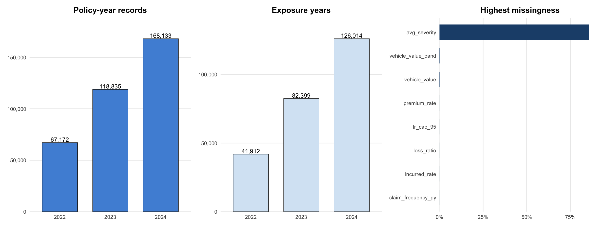
Pricing adequacy
Portfolio loss ratio = incurred / premium. This is the main profitability metric.
Claim frequency
Claims / exposure identifies how often adverse events occur.
Claim severity
Incurred / claim separates expensive claims from frequent claims.
Exposure base
Exposure prevents small segments from being overinterpreted.
Tail volatility
ECDF and Pareto views reveal concentration not visible in averages.
Validation
Tests and model diagnostics check whether visual differences persist statistically.
The analysis deliberately avoids treating average loss ratio as a sufficient answer. Insurance profitability is skewed, zero-heavy, and segment-dependent.
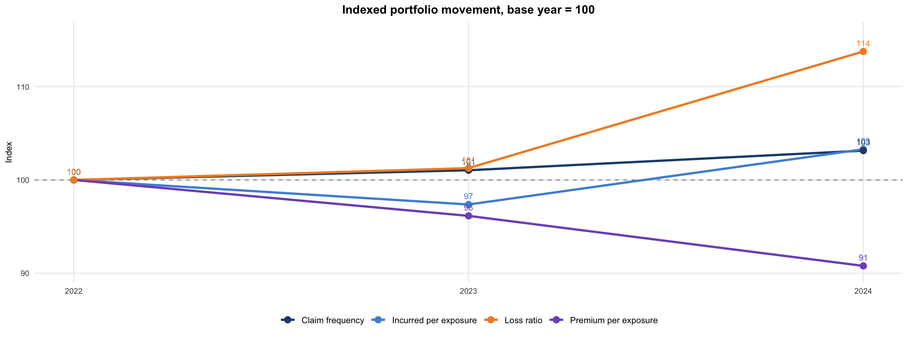
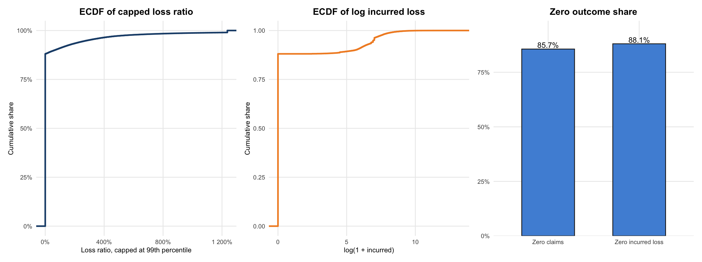
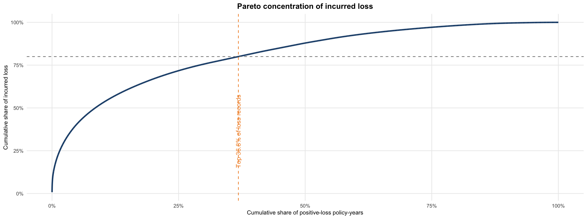
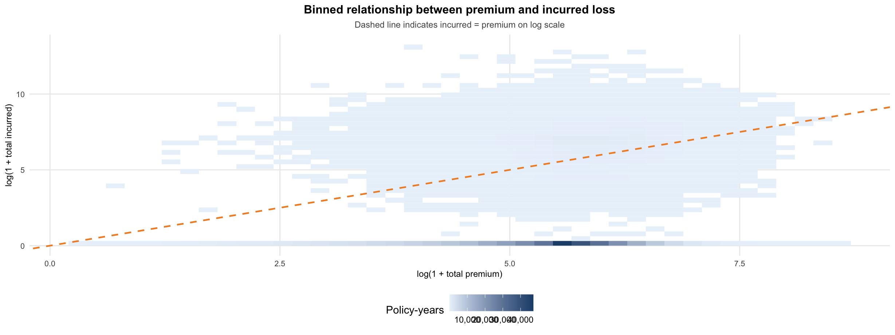
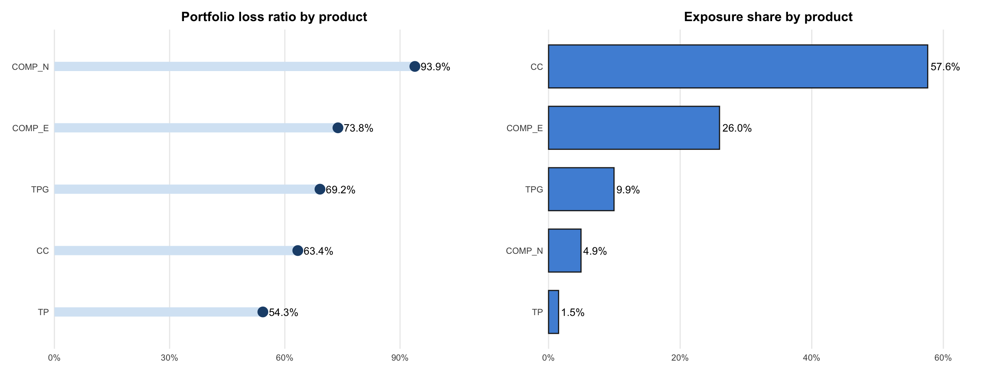
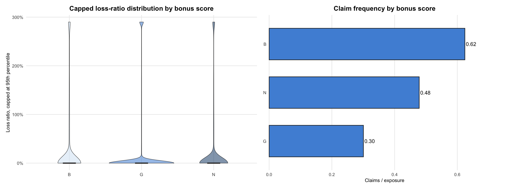
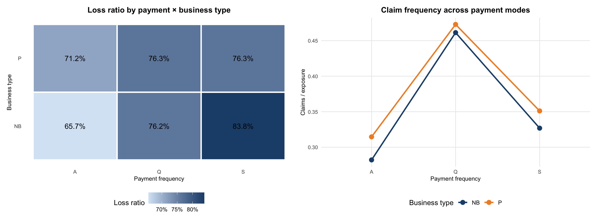
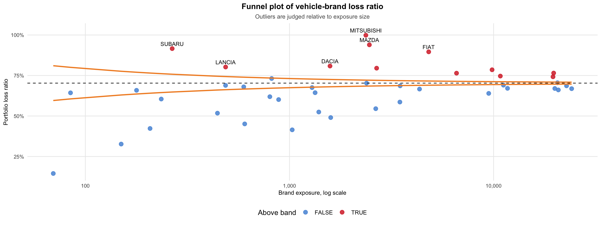
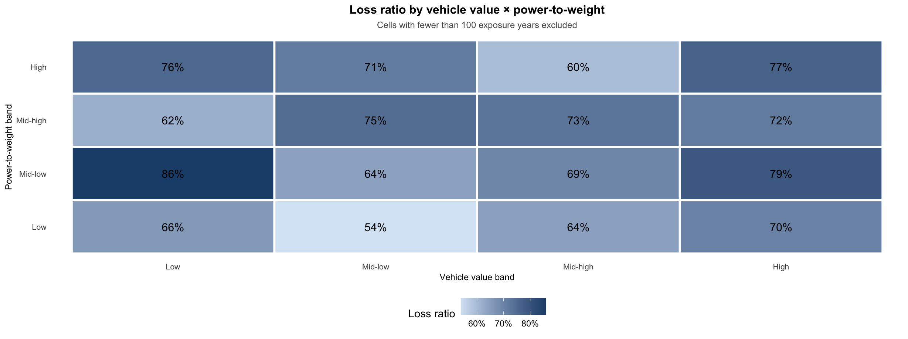
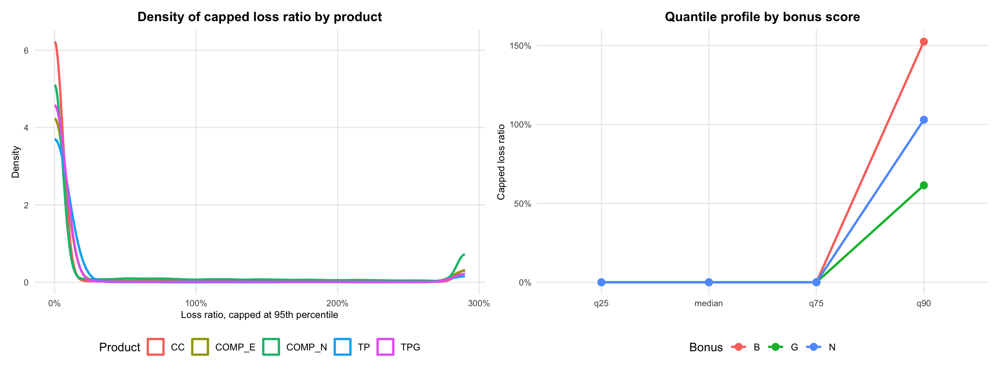
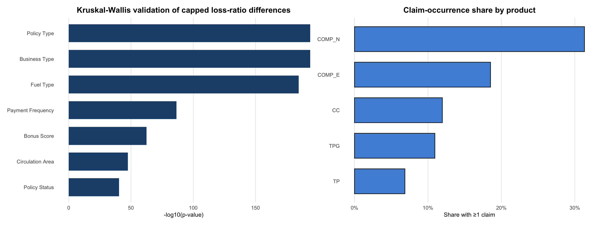
1. Price by exposure-adjusted loss ratio, not raw incurred totals.
Loss ratio is the main portfolio profitability metric, but it must be interpreted with exposure.
2. Separate frequency risk from severity risk.
High claim frequency and high incurred severity point to different underwriting actions.
3. Prioritise product and bonus-score review.
These variables create visible profitability separation and should enter the first pricing shortlist.
4. Use funnel screening before acting on small segments.
Extreme loss ratios in low-exposure brands can be noise; funnel plots provide a more defensible signal.
5. Monitor interaction pockets.
Vehicle value × power-to-weight combinations reveal risk pockets that single-variable summaries can miss.
Overall conclusion: profitability pressure is not random. It is concentrated in observable product, bonus, payment, vehicle, and brand-risk structures. The next step should be actuarial modelling, but the visual analytics already identifies where management attention should begin.
ISSS608 Take-home Exercise 1